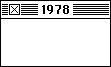
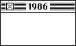
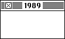
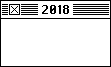
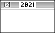

Born in Ithaca New York on February 5th.During a high school internship she was introduced to graphic design and photo typesetting.Earned her B.A. from Mount Holyoke College in Massachusetts.

Received an M.A. and a Ph.D. from New York University.After working as a curator and sculptor, her high school friend Andy Hertzfeld got her hired at Apple to design icons for the Mac.

Became the creative director at NeXT when Steve Jobs left Apple, where she hired and worked with Paul Rand.

Left NeXT and created her own design firm, and worked with companies like IBM, Microsoft, and Facebook.Hired by Pinterest as Product Design Lead as her first full-time employment in over two decades.

Received the AIGA medal on April 20th.

Hired as Design Architect at Niantic Labs - an AR design firm.